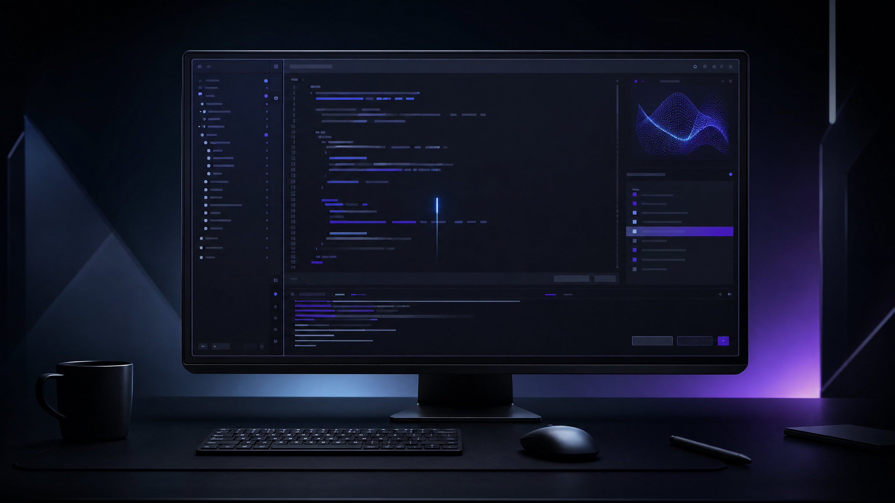

KAZER / Laboratory
Ferramentas para construir.
Um espaço separado para experiências e ferramentas do KAZER. O que ainda não existe aparece claramente como Em breve.
Laboratory / experiência beta
Um espaço para construir com o KAZER.
O KAZER CODER está em desenvolvimento. Esta primeira experiência apresenta a direção do produto e prepara o espaço para ferramentas de programação que serão liberadas gradualmente.
Beta em desenvolvimento.Alguns recursos ainda não estão disponíveis. Nada nesta tela representa uma função liberada antes da hora.
APRESENTAÇÃO VISUAL · SEM VOZ

Direção visual do laboratório
Uma prévia realista do ambiente em construção.BETA
Uma prévia realista do ambiente em construção.BETA
KAZER CODER · BETA
Bem-vindocriador
Este é o seu ponto de entrada no ambiente de programação do KAZER. O espaço ainda está em desenvolvimento e mostra somente o que já está preparado.
1
2
3
4
5
6
7
8
9
10
11
12
2
3
4
5
6
7
8
9
10
11
12
// KAZER CODER · espaço inicial do Laboratory
const workspace = {
status: "beta",
tools: "em breve",
focus: "construir com clareza",
};
// As próximas ferramentas serão adicionadas aqui.
export default workspace;
const workspace = {
status: "beta",
tools: "em breve",
focus: "construir com clareza",
};
// As próximas ferramentas serão adicionadas aqui.
export default workspace;